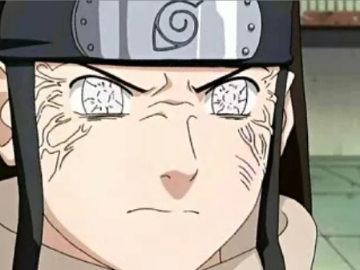

The Base Byakugan
The Byakugan is a highly esteemed ocular jutsu in the Naruto series, primarily associated with the Hyuga clan. This dojutsu is characterized by its unique and striking appearance: when activated, the user's eyes take on a milky-white color, and the veins surrounding the eyes become more pronounced. The Byakugan endows its user with a range of remarkable abilities, most notably unparalleled visual perception and insight into the chakra network.
One of the most notable features of the Byakugan is its extraordinary 360-degree field of vision. Users can see in all directions without blind spots, even through solid objects and barriers. This ability makes it nearly impossible for enemies to approach stealthily, as the Byakugan user can detect their presence from any angle. Additionally, the Byakugan allows its user to see the flow of chakra in the body, pinpointing chakra points and meridians with precision. This skill is often used to disrupt an opponent's chakra flow, making it an effective tool in taijutsu battles.
Furthermore, advanced users of the Byakugan can access additional abilities, such as the Gentle Fist technique, a unique form of taijutsu that targets an opponent's chakra points to disrupt their flow of chakra and inflict internal damage. The Byakugan is a symbol of the Hyuga clan's excellence in martial arts and their mastery of the Gentle Fist, making them formidable opponents in the Naruto universe.
Byakugan User FightThe Tenseigan
The Tenseigan is an extremely rare and unique dojutsu in the Naruto series, distinct from the Sharingan and Byakugan. It is associated with the Otsutsuki clan, particularly Toneri Otsutsuki, a character introduced in "The Last: Naruto the Movie." The Tenseigan is characterized by its striking appearance—a pale blue eye with a pupil resembling a series of concentric circles. It bestows its wielder with formidable powers and abilities that rival those of the Sharingan and Byakugan.
The Tenseigan primarily enhances the user's sensory perception and chakra manipulation abilities. It allows the wielder to see chakra in the same manner as the Byakugan but on a much grander scale, including the ability to perceive and interact with the chakra of celestial bodies like the moon. One of its most potent abilities is the power to control various forms of chakra, including Tensei Chakra, which can be used for various offensive and defensive techniques, such as creating powerful chakra constructs and barriers.
To awaken the Tenseigan, one must possess a Byakugan and merge it with the chakra of an Otsutsuki clan member. In the Naruto storyline, Toneri Otsutsuki sought to awaken the Tenseigan by kidnapping Hinata Hyuga and extracting her Byakugan's chakra. This process, however, has significant consequences and is not without its moral dilemmas. The Tenseigan remains a captivating addition to the Naruto universe, showcasing the depths of ocular jutsu capabilities within the series and the complexity of its lore.
Tenseigan User Fight